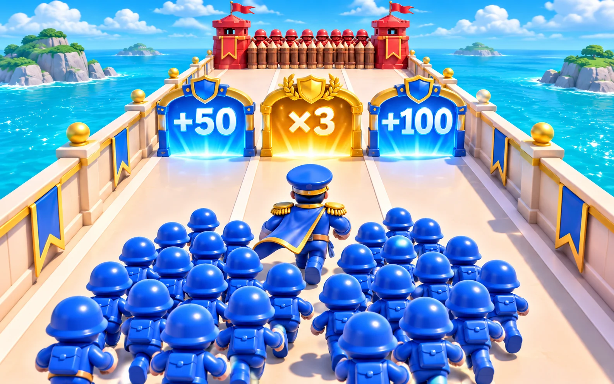

القرار يصنع الفرق
زحف الجموع
بوابة صح. جيش أكبر. انتصار أقرب.

اسحب · ضاعف · انتصر30 مرحلة3 مساراتكل يوم تحدٍ جديد
جيشك ينتظر الإشارة
اختر طريق الفوز
ابدأ رحلتك من المرحلة الأولى.
جارٍ تجهيز اللعبة…
كيف تلعب؟ ＋
اسحب يمينًا ويسارًا لاختيار مسارك. البوابات الزرقاء تزيد الجنود، والذهبية تضاعف العدد. انتبه للأحمر والقسمة.
يطلق جيشك تلقائيًا على العدو في مسارك. الحاجز الذي لا تهزمه قبل الوصول يخسّرك جنودًا. اجمع أكبر جيش واهزم القلعة قبل انتهاء 90 ثانية.
على الكمبيوتر استخدم الأسهم أو A وD، وزر المسافة للإيقاف. يمكن أيضًا استخدام زري الاتجاه أسفل اللعب.
تقدّمك محفوظ على هذا الجهاز، والتحدّي اليومي له نتيجة مستقلة.
خريطة المراحل
0 نجمةالمرحلة 1جاهز للزحف
جنودك0
Ⅱ
خذ نفسًا
جيشك ينتظرك. الوقت متوقف.
✦
انتصار!
0 نقطة0 جندي